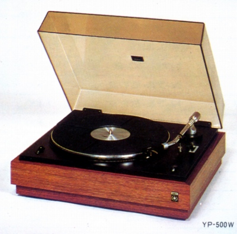
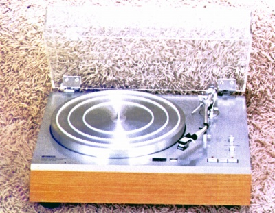
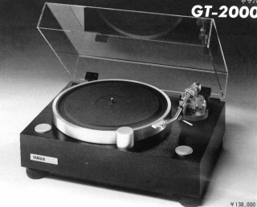
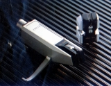
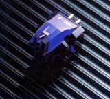
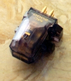
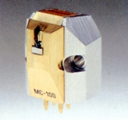
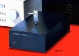
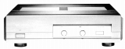
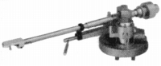

YAMAHA （ヤマハ）
1897（明治30）年設立の楽器・AV機器メーカー。1987（昭和62）年現在の社名に変更。オートバイ等の「ヤマハ」は「ヤマハ発動機」であり現在では株式の所有関係は薄れている。アナログディスク関連では古くから美しいデザインのプレイヤーを生産していたが、1980年代のGTシリーズのプレイヤーの印象が強い。
当サイトで扱うアナログ関連機器についてはいささか変わった製品史を築いた。手元の資料を見る限りでは、1970年代前半にはヘッドシェルやターンテーブルシートなど、プレイヤー回りのオプションしかなかった。このころはカートリッジやアームなど主要なパーツについてもOEM調達でなく、他社製を採用していた。


（1970年代のYP-500。このプレイヤーはシュアーM75を装備していた。当時のフラグシップモデルYP-1000ではアームがスタックス製。）
その後、1970年代後半のMCカートリッジの流行に際して、まずヘッドアンプを発売した。ついで自社ブランドのMC型カートリッジを出し、1980年代に入ってから、ＧＴシリーズのオプションとして、アームを発売した。

YAMAHA （ヤマハ）の製品を以下のように分類する。（この分類は個人的な意見で、メーカーの分類ではありません）
�T.カートリッジ
プレイヤー付属のカートリッジを除けば1978年発売のMC-1Xが最初の製品か？以降の製品はすべてMC型。


（左 MC-1S 右 MC-3)MC-3 MC-4 MC-5 MC-7 MC-9 MC-10 MC-11


(左 MC-2000 右 MC-100)
�U.昇圧トランス・ヘッドアンプ・フォノイコライザー。
1977年のHA-1以降すべてヘッドアンプである。第2世代のHA-2及びHA-3では、専用シェル内にFETなど回路の一部を内蔵したユニークな製品だった。

(HA-2)またヤマハは1980年代後半はデジタルに大変力を入れていた。創業100周年を記念した10000番シリーズのコントロールアンプCX-10000はデジタル信号処理に特化したアンプであり、フォノを省略していた。その際に用意されたのがフォノイコライザーHX-10000。

(HX-10000)
�V.トーンアーム
以前は他社のアームを自社のプレイヤーに採用していたヤマハが、アームまで販売するようになったのは1982年のGT-2000の発売が契機であった。YSA-1は標準装備が一般的なＳ字型アームにであったGTシリーズ用に用意されたストレートタイプのアームで、後にGT-2000Xでは標準装備された。後により剛性を高めたYSA-2が追加された。

(YSA-1)＊なお、ヤマハ製ではないが、同社のGTシリーズ用に特化したアームに、サエクのWE-407GTがある。
�W.ヘッドシェル他
単品カートリッジに乗り出す以前から自慢の木工技術を生かした美しいプレイヤーを発売しており、そのころから交換用のヘッドシェルが用意あれていた。またGTシリーズ用に各種のオプションパーツが用意された。
・その他